i2b2 Previous Query View
The Previous Query view is designed to display the most recent queries run by a user. The results associated to the query are also available for viewing.
Introduction
This section describes the layout and contents of the Previous Query view.
|
NOTE:
There are two types of queries that can be run in the i2b2 Web Client;
-
A standard i2b2 query (
 ) )
-
A Temporal query ()
Both of these types of queries will appear in the Previous Query view and throughout this document they will both be referred to as a "Previous query".
For more detailed information on the distinction of these two types of queries please see the Query Tool help.
|
Layout of the Previous Query View
A previous query ( / ) is created when a query is run from the Query Tool.
The query is stored and displayed in the Previous Query view. These previous queries can be used to run new queries or to easily populate other views.

The query in the previous query view is comprised of multiple hierarchical levels that can be seen by expanding each level of the tree. These levels are outlined below.
Previous Query Name
The name of the previous query is the top level of the hierarchal tree and is comprised of these three components.
- Query Name - the name given at the time the query was created. The default name contains an abbreviated description and the time the query was run.
- Date - the date the query was created.
- User Id - the user who created (ran) the query.
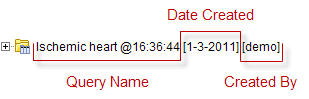
Results Folder
The Results folder () contains the results of the query. To see the query results simply expand the folder by clicking on the plus sign ( ) located next to the result name.
) located next to the result name.
Results
The results associated with a previous query are determined by the query result type(s) that are selected when the query is run in the Query Tool view.
Patient Set
The Patient set ( ) appears if Patient set or Timeline was checked at the time the query was run. The set contains all the patients who met the defined search criteria.
) appears if Patient set or Timeline was checked at the time the query was run. The set contains all the patients who met the defined search criteria.

Encounter Set
The Encounter Set () appears if Encounter set was checked at the time the query was run. The set contains all the patients whose encounters met the defined search criteria.

Number of Patients
The Number of Patients () appears if Number of Patients was checked at the time the query was run. The results are a total count for those patients who met the defined criteria.

Gender Patient Breakdown
The Gender patient breakdown () appears if Gender patient breakdown was checked at the time the query was run. The results are a breakdown by gender for those patient who met the defined criteria.

Vital Status Patient Breakdown
The Vital Status patient breakdown () appears if Vital Status patient breakdown was checked at the time the query was run. The results are a breakdown by vital status for those patient who met the defined criteria.
Race Patient Breakdown
The Race patient breakdown () appears if Race patient breakdown was checked at the time the query was run. The results are a breakdown by race for those patient who met the defined criteria.
Age Patient Breakdown
The Age patient breakdown () appears if Age patient breakdown was checked at the time the query was run. The results are a breakdown by age for those patient who met the defined criteria.
Navigation
Rename a Previous Query
Users can rename a previous query from the list by selecting Rename from the popup menu.
- Using the right mouse button, click on the Previous Query to be renamed.
- A pop-up menu will open.
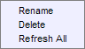
- Select Rename from the list.
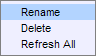
- The rename query dialog box will open.
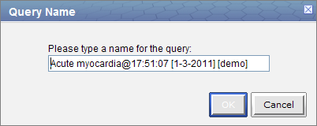
- Enter the new name of the previous query and click on the OK button.
- The previous query will now display in the view with the new name.
|
NOTE:
When dragging a previous query to another view the new name will appear when it is dropped.
|
Delete / Remove a Previous Query
Users can rename a previous query from the list by selecting Delete from the pop-up menu.
- Using the right mouse button, click on the Previous Query to be deleted.
- A pop-up menu will open.
- Select Delete from the list.
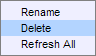
- A message box will open asking if you are sure you want to delete the query.
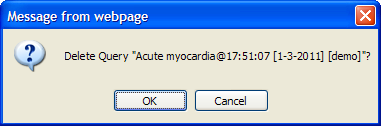
- Click on the OK button to delete the query
|
WARNING:
Once you click on Delete, the previous query will be removed from the view and there is no way to restore it. Therefore you need to make sure you want to remove it from the list.
|
Refresh the List
Users can refresh the list of previous queries from the list by selecting Refresh All from the pop-up menu.
- Using the right mouse button, click on any of the previous queries in the list.
- A pop-up menu will open.
- Select Refresh All from the list.
- The list of previous queries and their status will be refreshed.
Options
Users can define how many previous queries to display and the order in which they will appear in the list. The display options are set in the Options for Previous Queries window, which can be accessed by clicking on the Show Options button ( ).
).
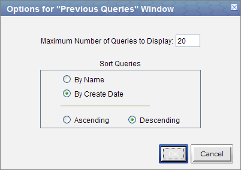
Maximum to Display
Queries to Display
The Maximum number of queries to display defines how many previous queries will be visible in the Previous Query view. Once the maximum number is reached the oldest query will no longer appear in the view.
|
TIP:
Recommendation: Use the Workplace view to save those previous queries that will be used often. In addition to being more convenient it will also prevent you from loosing a common query if the maximum number to display has been reached.
|
Sort Queries
Sort by Create Date
Selecting to sort By Create Date will sort the queries in the Previous Query view by the date and time the query was created. Once you select to sort by the creation date, you need to define whether or not it will be in ascending or descending order.
Ascending: displays the oldest query first.
Descending: displays the newest query first.
|
NOTE:
Renaming a query will not affect the sort order as the date and time is stored with the previous query.
|
Sort by Name
Selecting to sort By Query Name will sort the queries in the Previous Query view alphabetically by the name of the query. Once you select to sort by name, you need to define whether or not it will be in ascending or descending order.
Ascending: queries are displayed in alphabetical order with the beginning of the alphabet at the beginning of the list. (A to Z)
Descending: queries are displayed in alphabetical order with the beginning of the alphabet at the end of the list. (Z to A)
Using a Previous Query
This section describes how to use a previous query.
Draggable Items
Different parts of the previous query can be dragged and dropped (copied) from the Previous Query view to other views in the i2b2 Web Client.
- Previous Query
Associated with each previous query ( / ) are the items used to run the query, any constraints that were defined, and the results. A previous query can be added to other views by dragging the previous query name from Previous Query view to one of the following views.
- Query Tool view; drop in the panel or Query Name.
- Workplace view; drop in a user or shared folder
- Patient Set
A specific set of patients can be added to other views by dragging the Patient set () from Previous Query view to one of the following views.
- Query Tool view; drop in the panel.
- Workplace view; drop in a user or shared folder
- Encounter Set
A specific set of encounters (visit list) can be added to other views by dragging the Encounter Set () from Previous Query view to one of the following views.
- Query Tool view; drop in the panel.
- Workplace view; drop in a user or shared folder
Add to Query Tool View
The Query Tool view is designed to simplify the process of retrieving information from the database associated to the i2b2 Web Client.

Within the Previous Query view there are several items that can be used in the Query Tool view to run a query. The following sections explain how to add the previous query, patient set and encounter set to the Query Tool view.
Add Previous Query to Query Tool View
Within the Query Tool view, a previous query can be added to one of the following two locations.
| Query Name field |
The items and constraints from the original query will be used to create a new query. This information can be edited to make a new query or can be used as is to run the query again.
|
| Panel (Group) |
Used within a new query (query-in-query). The information associated with the previous query can not be edited. Add additional search criteria (items) to be used in the new query.
|
Add Previous Query to the Query Name (New Query)
- Highlight the previous query ( / ) by clicking on the name of the query.
- While holding the left mouse button down, drag the item to the Query Tool view.
- Drop the item into the Query Name field.
- The item(s) associated with the previous query will display in the appropriate group(s), the name of the query will appear at Query Name, and any constraints that were defined when the original query was run will now default with the new query.

|
NOTE:
When you run the query it will receive a new name. This is to distinguish the first previous query from the second.
|
Add Previous Query to the Query Name (Query-in-Query)
- Highlight the previous query ( / ) by clicking on the name of the query.
- While holding the left mouse button down, drag the item to the Query Tool view.
- Drop the item into the Query Name field.

- The previous query will now display in the panel for Group 1.

Add Patient Set to the Query Tool View
- Click on the plus sign () next to the name of the previous query that contains the patient set.
- Click on the plus sign () next to the results folder.
- Highlight the Patient set () by clicking on its name.
- While holding the left mouse button down, drag the item over to the Query Tool view
- Drop the item into the panel labeled Group 1.

- The item will now display in the panel for Group 1.

Add Encounter Set to the Query Tool View
- Click on the plus sign () next to the name of the previous query that contains the encounter set.
- Click on the plus sign () next to the results folder.
- Highlight the Encounter set () by clicking on its name.
- While holding the left mouse button down, drag the item over to the Query Tool view
- Drop the item into the panel labeled Group 1.

- The item will now display in the panel for Group 1.

Add to Workplace View
Information in the workplace is related to the most common concepts and queries that an individual uses and in essence becomes their personal workplace.

Add Previous Query to Workplace View
- Highlight the previous query ( / ) by clicking on the name of the query.
- While holding the left mouse button down, drag the previous query name to the Workplace view.
- Drop the previous query into either your workplace folder or the shared folder.
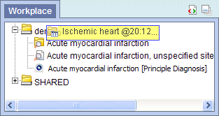
- The previous query will now appear in the workplace with the same name.
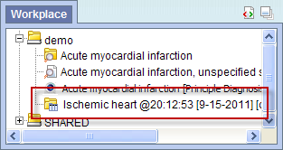
Add Patient Set to Workplace View
- Click on the plus sign () next to the name of the previous query that contains the patient set.
- Click on the plus sign () next to the results folder.
- Highlight the Patient set () by clicking on its name.
- While holding the left mouse button down, drag the Patient set to the Workplace view.
- Drop the Patient set into either your workplace folder or the shared folder.
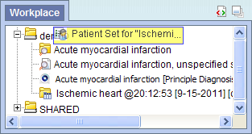
- The Patient set will now appear in the workplace.
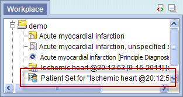
Add Encounter Set to Workplace View
- Click on the plus sign () next to the name of the previous query that contains the encounter set.
- Click on the plus sign () next to the results folder.
- Highlight the Encounter Set () by clicking on its name.
- While holding the left mouse button down, drag the Encounter set to the Workplace view.
- Drop the encounter set into either your workplace folder or the shared folder.
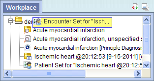
- The encounter set will now appear in the workplace.
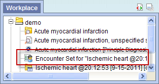